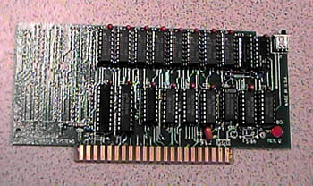

The Magna Systems 16K/256K Memory Board

While many users were moving
to XL's and XE's to obtain more memory by using such memory upgrades as
the Newell memory upgrades or using other various products.
Atari 800 owners were feeling a little less then adequate with their memory.
The only really large memory upgrade at the time was the Alxon Mosaic memory
cards allow up to 192K in your Atari 800. Well a company from
New York called Maga Systems began selling a memory upgrade card.
This card acted as a normal 16K memory card and had to be seated in slot
#2, some minor jumper wire modifications had to be done on the underside
of the Atari 800 motherboard. When run with with a modified
version of Atari DOS, the Magna 256K would initialize and provide a 240K
RAMdisk which was extremely useful, especially to BBS SysOps who needed
extra speed for disk access without a hard drive. Magna systems
also had a 1MB memory card available as well.